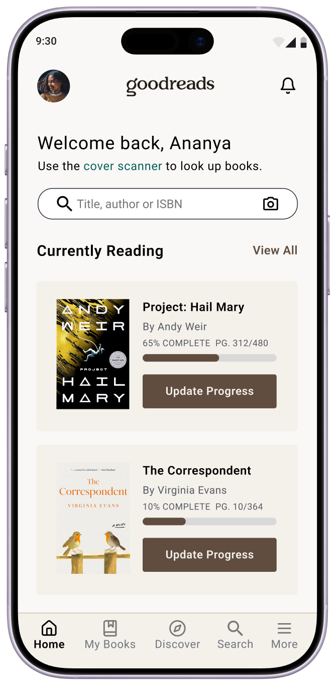
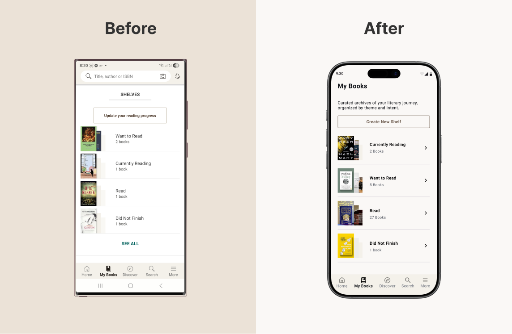
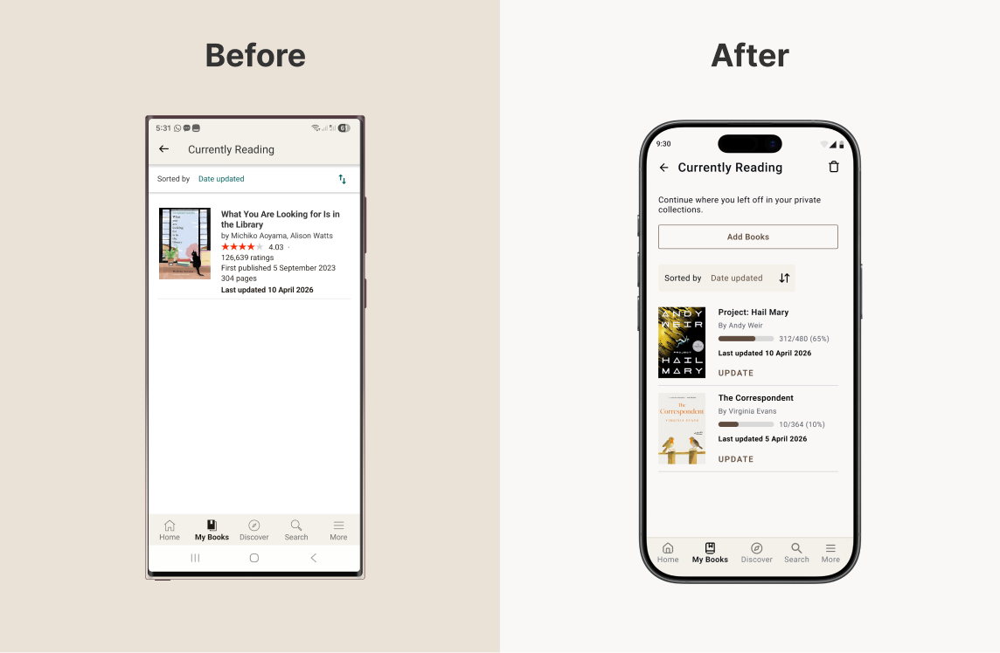
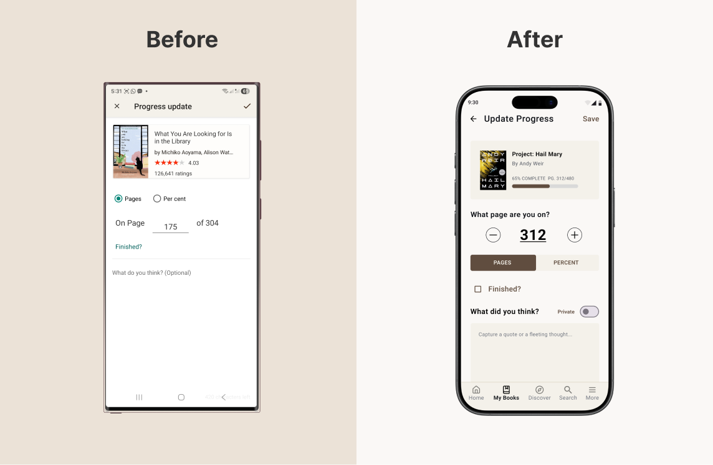

Portfolio case study · Goodreads
Redesigning reading into a habit worth keeping
A research-driven, speculative redesign of Goodreads: shifting the product from a social-first directory to a reading-first companion that respects how readers track books.
Conceptual project for portfolio purposes. Not affiliated with or endorsed by Goodreads.
The problems
Two gaps where Goodreads may be losing user loyalty quietly
Finding books is only one part of the experience. Continued engagement may suffer when users struggle to reconnect with active reads or quickly perform common repeat actions.
A social-first homepage that leads with "Find Friends" over any reading action. This makes the core use case feel secondary from the first screen.
No quick way to add or organise books, and no sense of reading momentum, thereby making the tracking experience feel like admin rather than habit.
"I have not noticed a single improvement in years. The interface looks the same as it did a decade ago."
— Goodreads user, Reddit
"Being able to quickly add books is entirely absent. It should be the most obvious thing."
— Goodreads user, Reddit
Research
The voice of the user, unsolicited
As a secondary research source, I analyzed public Reddit threads discussing Goodreads. Repeated themes across user conversations helped surface recurring friction points worth exploring further.
- App Store reviews
- Reddit — r/goodreads
- Reddit — r/books
Screens
Four surfaces redesigned around the reading act
Each screen targets a specific moment of friction, which starts from the first thing users see down to the micro-interaction of logging a reading update.
Empty state leads with Find your friends as the primary call to action.

Personalised greeting and Currently Reading shelf with progress bars front and centre.
The current design greets returning users with a social prompt even when they have books actively in progress. The redesign flips the hierarchy: a personalised welcome surfaces the currently reading list immediately, with visual progress bars and contextual update actions. Discovery and social features move below the fold.

The current design presents shelves as a flat, text-heavy list with Update your reading progress as the only visible action. The redesign replaces this with rich shelf cards: book cover collages, clear counts, and a Create New Shelf CTA. Scanning your library becomes visual, not administrative.

The current design fills the shelf with publishing information — ratings, publication dates, page counts — none of which helps a reader pick up where they left off. The redesign strips this back: progress bars showing percentage and page position, an inline Update action per book, and an Add Books CTA above the fold.

The current update screen is purely transactional — a page input and an optional text field that reads as an afterthought. The redesign reframes the same interaction as a reading ritual: a tactile stepper, the book's current progress bar as context, and a journaling field with a private toggle that invites reflection rather than demanding it.
Design decisions
Choices worth explaining
Each decision reflects a deliberate tension between what the product was optimising for and what users were actually returning for.
-
Discovery and social features moved below the fold, not removedSocial features add value, but leading with them can overshadow higher-frequency reading tasks. Demotion, not removal, preserves discovery while letting core actions come first.
-
Add Books surfaced inside the shelf, not behind a separate flowHigh-frequency tasks should require the fewest steps possible. Placing the action where users already are removes a navigation detour.
-
Journaling is optional, private by defaultUsage increases when reflection feels safe, private, and optional. Mandatory visibility risks turning a personal tracking tool into a performative space.
-
Personalisation based on user activity, not algorithmic cold-startRecommendations are only useful when they feel relevant. The redesigned homepage tailors content to what the user is actively reading, not a generic feed.
Business impact
Improving relevance, reducing friction, and deepening engagement
As a speculative concept, impact is framed as a hypothesis grounded in the documented frustrations the redesign addresses.